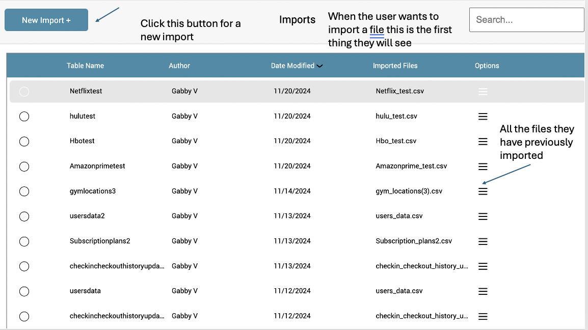
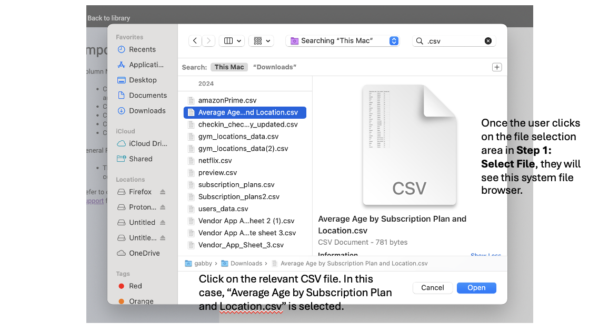
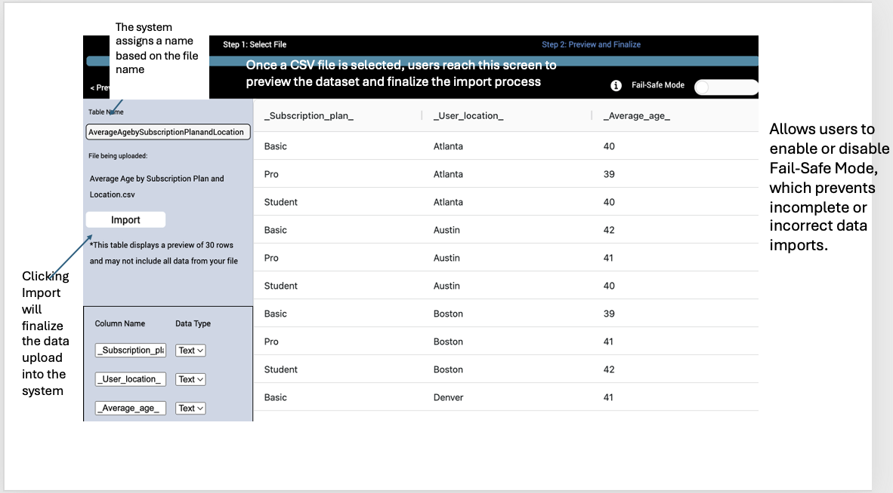
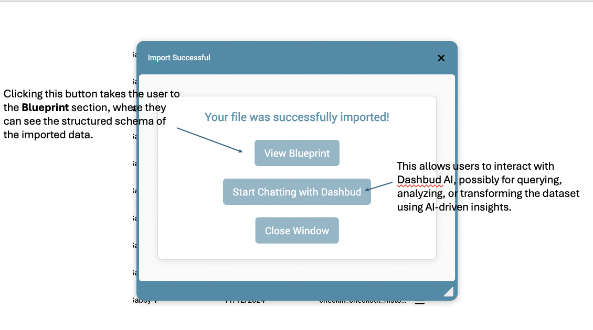

Step-by-Step Guide: Importing Data
This section guides you through importing data into Evolytix, ensuring a smooth and structured process.
Step 1: Starting a New Import
To begin importing data, click the "New Import" button. This initializes the import workflow where users can select files for processing.
Step 2: Selecting a File to Upload

Users will be presented with an interface to upload a CSV file. Drag and drop a file or click to open the file selection dialog.
Step 3: Choosing a File from System Browser
Once the file selection window opens, navigate to the desired CSV file and click "Open" to upload it.
Step 4: Previewing the Data
Before finalizing the import, users can preview the dataset to verify the data structure and ensure accuracy.
Step 5: Completing the Import
After a successful import, a confirmation message appears. Users can then proceed to view the structured schema or interact with Dashbud AI for insights.